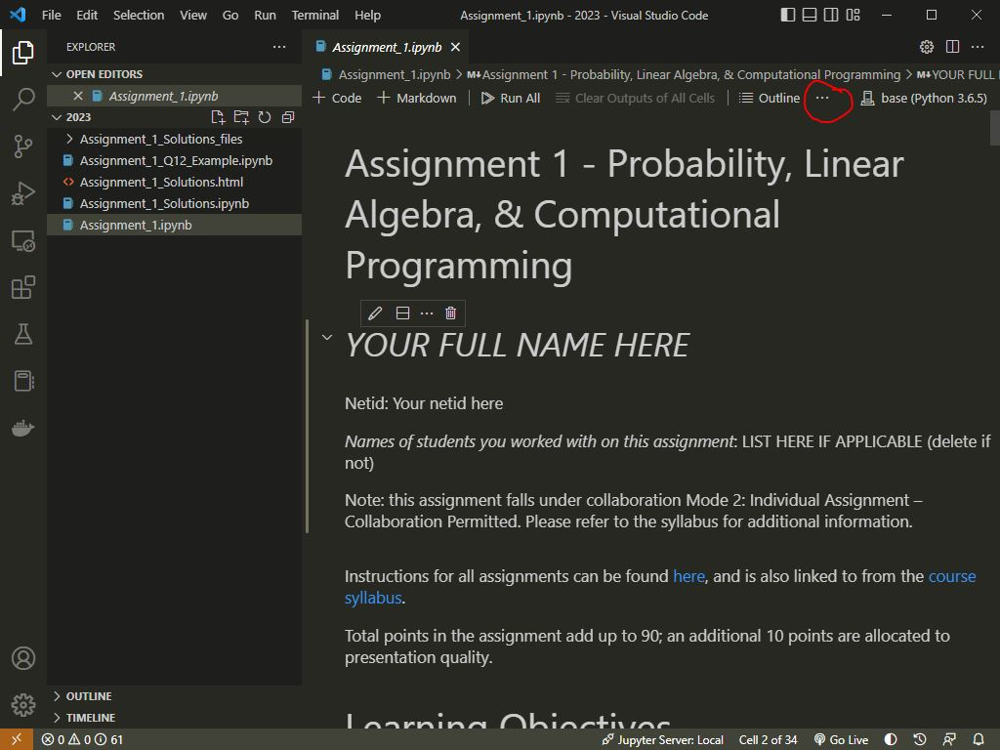
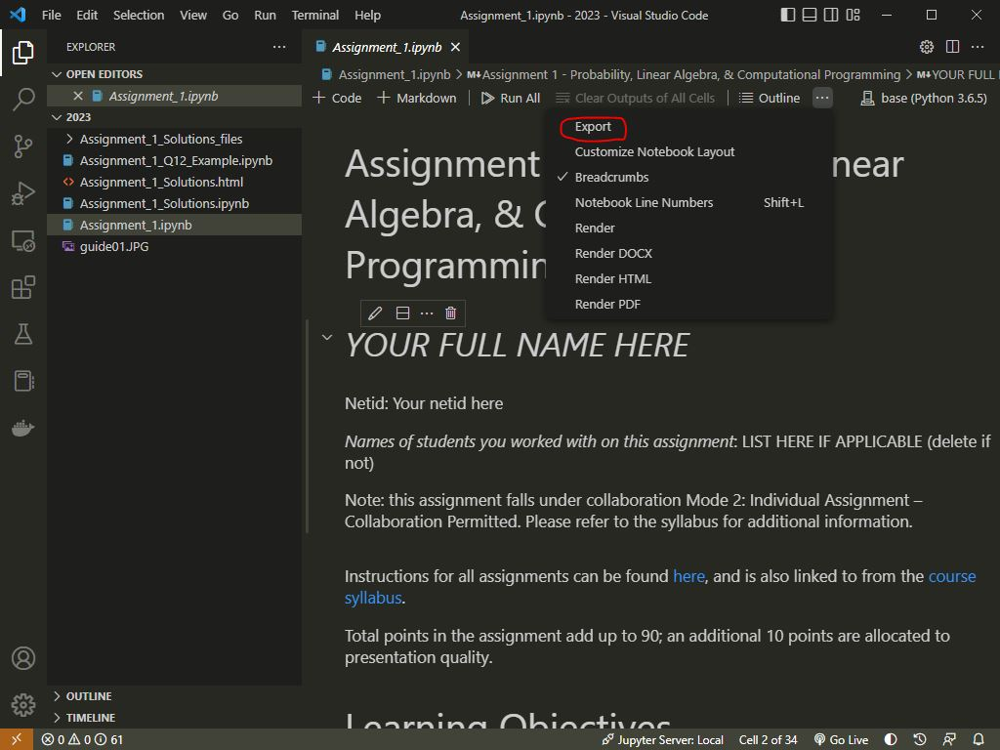
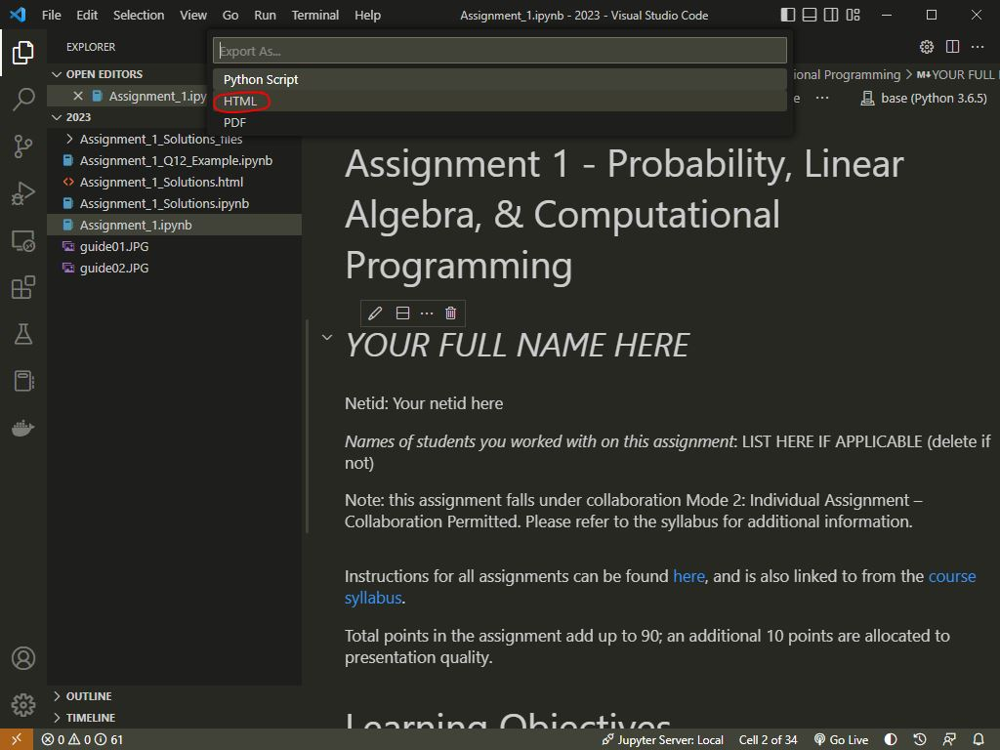
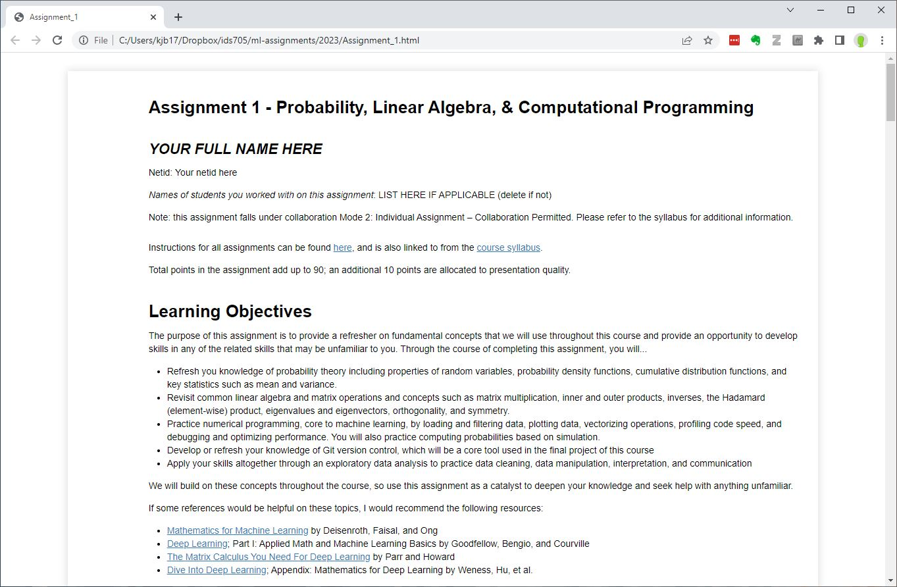
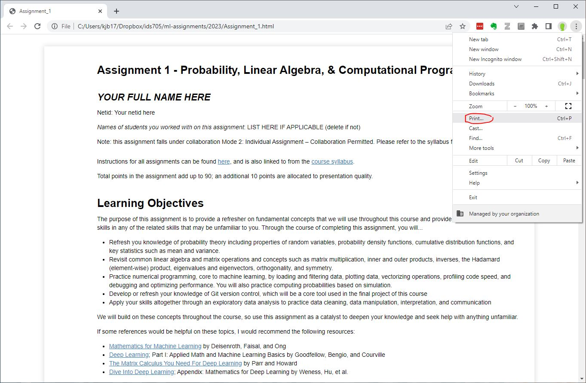
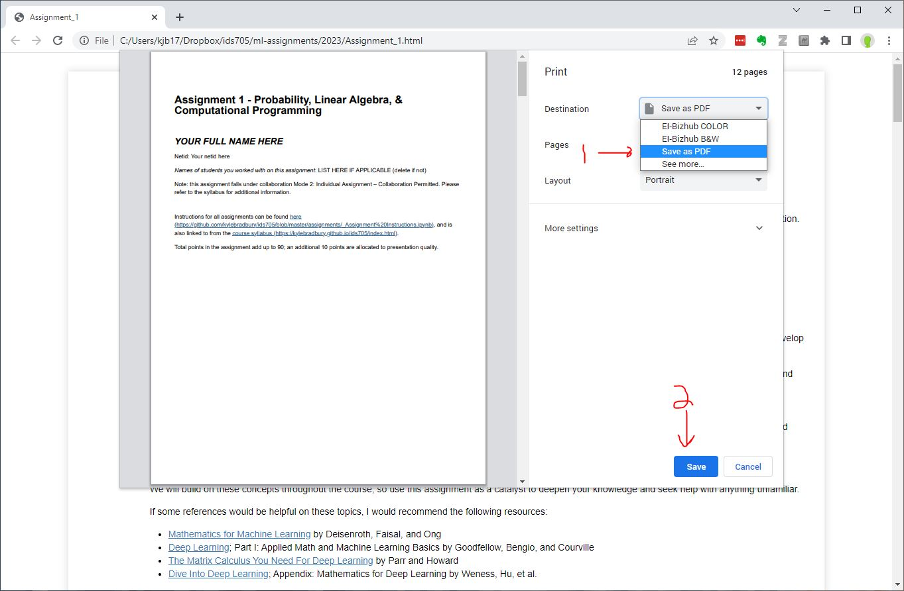
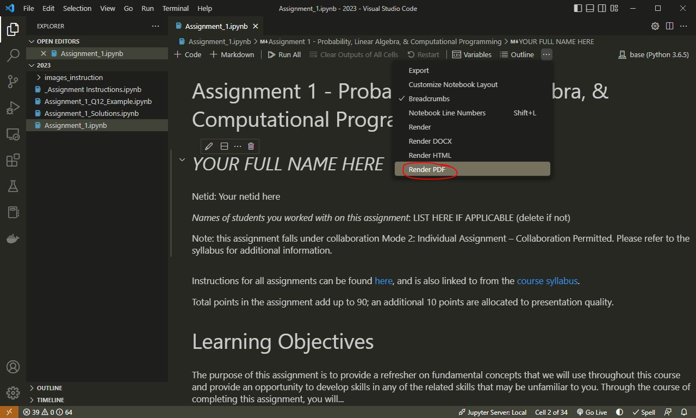
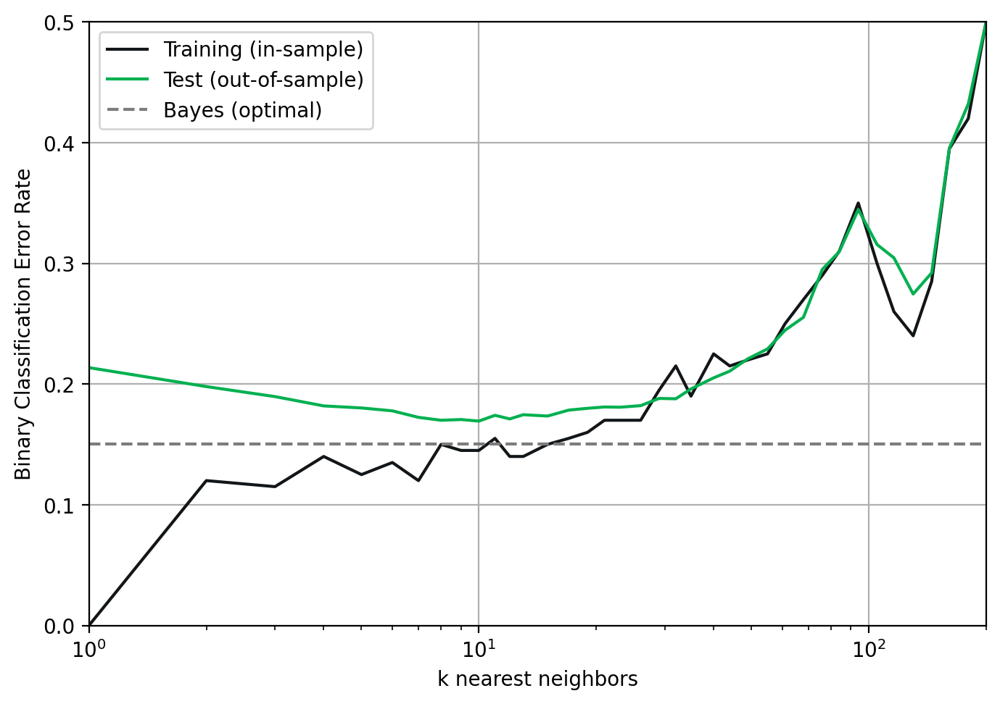

import numpy as np
import matplotlib.pyplot as plt
import pickle
# Load the data for plotting
datafilename = './plot_example_data/data.pkl'
infile = open(datafilename,'rb')
loaded_data = pickle.load(infile)
infile.close()
# Store the loaded data in convenient variable names
kvalues = loaded_data['kvalues']
error_training = loaded_data['error_training']
error_testing = loaded_data['error_testing']
error_bayesclf = loaded_data['error_bayesclf']
# Choose colors that will be distinguishable from one another
color0 = '#121619' # Dark grey
color1 = '#00B050' # Green
color2 = '#7c7c7c' # Light greyAssignment Instructions
Grading, Formatting, and Submission
Assignment Grading
Assignment grading will consist of two components: content (90%) and presentation (10%). The content grade will be based on the accuracy and completeness (including the depth) of your answers to each question. If a question asks you to explain, hypothesize, or otherwise think critically, be sure to demonstrate your critical engagement with the question. Presentation and collaboration are critical skills for success as a data scientist. To support you in refining those skills, we include the presentation component of the grade. The presentation score will be based on how well you communicate in writing, figure creation, and coding. Clear writing (with appropriate grammar and spelling), organized answers, well-organized/commented code, and properly formatted figures will ensure your success on the presentation component of the assignment.
How to Submit Assignments
Assignments will be submitted via Gradescope as a PDF and you will need to indicate the location of your work for each question and subquestion. Below is a step-by-step guide to submitting your assignments.
- Header. At the top of the document, include the assignment number, your name, your NetID, and a list of anyone you collaborated with on the assignment.
- Each answer is prefaced in bold by the question/subquestion number. Each question is followed by one or more sections typically labeled with section numbers (e.g. 2.3). Make sure you have a cell with that section number prior to your response. You may use multiple cells for each answer that include both markdown and code. For full credit, submitted assignments should be easily navigable with answers for subsections clearly indicated.
- Ensure that all cells have been run. Cells that have not been run will be treated as unanswered questions and assigned zero points.
- Create a PDF document of your notebook. There are a few ways to do this. Please see the guide below.
- Your content is legible prior to submission. Look over your PDF before you submit it. If we cannot read it, or parts are missing, we cannot grade it, and no credit will be given for anything we cannot read or is missing.
- Code is valid (able to run and producing the correct answer), neat, understandable, and well commented.
- Math is either clearly written and inserted into the proper part of the document or typeset using LaTeX equations.
- All text that is not code should be formatted using markdown. Two references to help include: ref1 and ref2.
- Submit your assignment by the deadline on gradescope. Any assignments received after the deadline will be treated as late. Please see this video for how to submit your assignment on gradescope. The submission link is here: https://www.gradescope.com/
- Assign the respective pages to each question. When you submit your assignment on Gradescope, you will be asked to assign pages of your PDF to each question accordingly. Be sure to leave time to complete this before submission. Please remember, if we cannot find your answer, we cannot grade it.
Example Question and Template
To demonstrate how to organize your responses using a Jupyter notebook please review the following:
Entering Mathematical Equations
You may either write out equations by hand or using markdown and LaTeX (LaTeX is recommended). Either way, I recommend that you complete the work on paper before typing up the final version if you choose to use LaTeX. If you hand-write your math, please digitize them (scan them in or take a picture) and place them in the proper order of the document for your final PDF. Either way, show your math including any intermediate steps necessary to understand the logic of your solution. If we are not able to interpret your meaning (or understand your writing), no credit will be given.
Rendering a PDF File
Option 1: Render from VS Code (Without Additional Extensions)
We recommend using VS Code for this course and for use in developing your Jupyter notebooks. Rendering pdfs from Jupyter Notebooks in VS Code has a couple of extra steps, though. To render a pdf without any additional extensions, you do the following:
- Open your notebook in VS code and hit the ellipsis (the three horizontal dots) just to the right of the tools for your notebook:

- Click “Export”:

- Select “HTML” (exporting to pdf won’t work without the installation of additional tools):

- Open the HTML file you just saved in Chrome:

- Click the options button (three vertical dots) and click “print”:

- Select the destination as “Save as PDF” and click “Save”:

- Voila! You should have a pdf
Option 2: Render from VS Code with Quarto and LaTeX
You can save a lot of the above steps if you’re willing to install 2 things: 1. Install Quarto, which is an open-source scientific and technical publishing system (great for making websites and blogs for your professional portfolio). 2. Install the Quarto VS Code extension 3. Install a version of tex for your operating system. 4. Once you do this, you can directly export your documents to pdf:

Option 3: Render from Jupyter Notebooks
Open your notebook in Jupyter Notebook or JupyterLab in your browser. Choose File → Print…, verify that the preview looks correct, and choose Save as PDF as the destination.
Whichever method you choose - always check your pdf before submitting to make sure everything is rendered and nothing is cut off!
Figure Guidelines
Here is an example of a well-prepared figure that checks all of the requirements for good figures. Please check out this Coursera course for skill development and Python plotting best practices.
Figure Checklist
- All plots should have a purpose - either being directly requested or should make a clear point.
- All plots should have axes labels and legible fonts (large enough to read).
- Legends are used when there are multiple series plotted on a single plot.
- Markers on plots are properly sized (e.g. not be too big nor too small) and/or have the appropriate level of transparency to be able to clearly read the data without obscuring other data.
- If there are multiple colors used on a plot, EVERY color can be distinguished from the rest.
- Figures are crisp and clear - there are no blurry figures.
- Plots should be explained clearly in text or have a caption explaining them
To demonstrate we’ll start by loading some data to plot (the example here is from the lecture on the bias-variance tradeoff):
Then, we create the plot:
%config InlineBackend.figure_format = 'retina' # Make clear on high-res screens
# Create the plot
fig, ax = plt.subplots(figsize=(7,5), dpi= 100) # Adjust the figure size and dots per inch to make it legible and clear
ax.semilogx(kvalues,error_training,
color=color0,
label='Training (in-sample)')
ax.semilogx(kvalues,error_testing,
color=color1,
label='Test (out-of-sample)')
ax.semilogx(kvalues,error_bayesclf,'--',
color=color2,
label='Bayes (optimal)')
ax.legend()
ax.grid('on')
ax.set_xlabel('k nearest neighbors') # Always use X and Y labels
ax.set_ylabel('Binary Classification Error Rate')
ax.set_xlim([1,200]) # Ensure the axis is the right size for the plot data
ax.set_ylim([0,0.5])
fig.tight_layout() # Use this to maximize the use of space in the figure
plt.show()
Figure 1. Ideally, each figure should have a caption that explains the figure. Here, the test data (green) approximates the generalization error rate, the lower-bound of which is the Bayes error rate (grey dotted line). The value of \(k\) represents the flexibility of the model with lower values of \(k\) representing higher model flexibility and higher values of \(k\), lower flexibility. The training error (black) is not considered out of sample, so in cases of high model flexibility (and in this case high overfit), the training error rate can reach zero.
Note the clear x and y axis labels and legends - there are no acronyms or shorthands used, just the full description of what is being plotted. Also note how easy it is to compare the color of lines and identify the baseline (Bayes) comparison line. Make your plots easy to read and understand. A figure caption is generally helpful as well to indicate what we are seeing in each plot.
Sources
Some questions on the assignments are adapted from sources including:
1. James et al., An Introduction to Statistical Learning
2. Abu-Mostafa, Yaser, Learning from Data
3. Weinberger, Kilian, Machine Learning CS4780, Cornell University